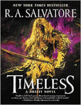
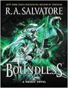
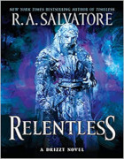

Romans de la série Generations
Suite à sa série Homecoming, R.A. Salvatore publie à partir de septembre 2018 une nouvelle série de 3 romans, Generations, autour de l'elfe noir Drizzt Do'Urden.
♦
Timeless. 1018. Malice est la matrone de la maison Do'Urden depuis 100 ans et la mère de deux enfants. Ambitieuse, elle utilise les hommes pour s'élever au sein de l'ordre des maisons nobles de Menzoberranzan. Elle s'immisce par exemple avec Jarlaxle dans une histoire avec les maisons Xorlarrin et Tr'arach pour pouvoir coucher avec Zaknafein, le maître d'armes de la maison Simfray. 1488. Alors que Drizzt s'apprête à être papa, Catti-brie étant enceinte, son père Zaknafein réapparaît. Qui, comment et pourquoi l'a-t-on ressuscité ? Pendant ce temps, Regis est à Neverwinter où il apprend que Lord Neverember vient de vendre pour 40 000 pièces d'or les ruines de Thornholf au clan nain des Stoneshaft, un château qu'il avait acheté il y a moins d'un an à la maison noble des Margaster de Waterdeep.
Avis : plus je lis Salvatore et moins j'accroche. Timeless est d'ailleurs pour moi le pire de ses 8 derniers romans. L'auteur semble vouloir fixer les bases de sa dernière trilogie, mais au final c'est un roman pour rien car il ne se passe rien d'intéressant et on n'y apprend rien sur les Royaumes Oubliés, ce qui était l'unique raison que me faisait continuer de le lire.
Boundless. La maison drow Melarn, menée par la matrone Zhindia et aidée par la maison Hunzrin et deux horreurs chasseresses ; Bronkyn et son clan nain des Stoneshaft ; une horde de démons. Tous passent à l'assaut de la cité naine de Gauntlgrym. Zhindia veut en finir une fois pour toutes avec Drizzt Do'Urden et son père, Zaknafein, alors que le chef des Stoneshaft se voit déjà devenir roi de Gauntlgrym. Pendant ce temps, à Waterdeep, Regis et Dahlia tentent de délivrer Artemis Entreri des mains d'Inkeri Margaster et de sa cousine Alvilda, possédées par Barlgura et un glabrezu. Et lorsqu'une horde de gnolls, gobelins, ogres et démons, fraîchement débarqués d'une flotte menée par Brevindon Margaster, envahie Luskan, c'est Wulfgar et le psionique Kimmuriel qui vont tenter de les stopper, alors que l'ex archimage Gromph et les magiciens de la Tour d'Accueil [Host Tower] se déclarent neutres face à cette nouvelle guerre. Le tableau se termine avec toutes les maisons drows de Menzoberranzan qui marchent unies sur Gauntlgrym.
Avis : ce n'est pour moi qu'à partir du chapitre 20, quand les drows s'en mêlent enfin, que l'histoire devient intéressante. Avant cela, c'est long... À ce stade il ne me reste plus que l'espoir que Generations laisse bien présager la fin de Drizzt. Un passage de relais à son fils ou sa fille et un nouveau départ serait salutaire.
Relentless. 1297. La matrone Malice, déjà mère de trois filles (Briza, Vierna et Maya) et de deux garçons (Nalfein et Dinin), met au monde un nouveau fils, Drizzt. Mais la tradition des drows veut que le troisième garçon soit sacrifié en l'honneur de Lolth alors, sachant que sa mère fera le nécessaire pour garder avec elle le fils qu'elle a eu avec le prestigieux Zaknafein, Dinin prend les devants et assassine son frère Nalfein. 1329. Zaknafien et Drizzt ayant chacun de leur côté fauté, Zaknafien accepte d'être sacrifié à Lolth pour sauver son fils, comme l'a suggéré Jarlaxle. Mais suite à cela Drizzt quitte Menzoberranzan. 1488. Luskan est tombée aux mains de Brevindom Margaster. Drizzt semble avoir été enlevé par l'horreur chasseresse qui le poursuivait et Afafrenfere part à sa recherche. Les drows de Menzoberranzan arrivent enfin aux portes de Gauntlgrym lorsque Catti-brie met au monde une fille.
Avis : je passerais sur toutes les pages de combats inintéressantes à souhait vu qu'on sait depuis la première ligne qu'elles en seront les issues, pour résumer ce livre à un vrai foutage de gueule. Salvatore passe d'incohérences (rien de mieux qu'un homme pour convaincre en trois phrases une mère matrone de renier ses croyances millénaires, c'est bien connu) en inepties (ses révélations sur Lolth) et sabote les Royaumes Oubliés avec sa vision du « maintenant tout le monde il est gentil ». Il ferait mieux selon moi de laisser cet univers à des auteurs qui en respectent l'histoire forgée au fil des décennies passés...